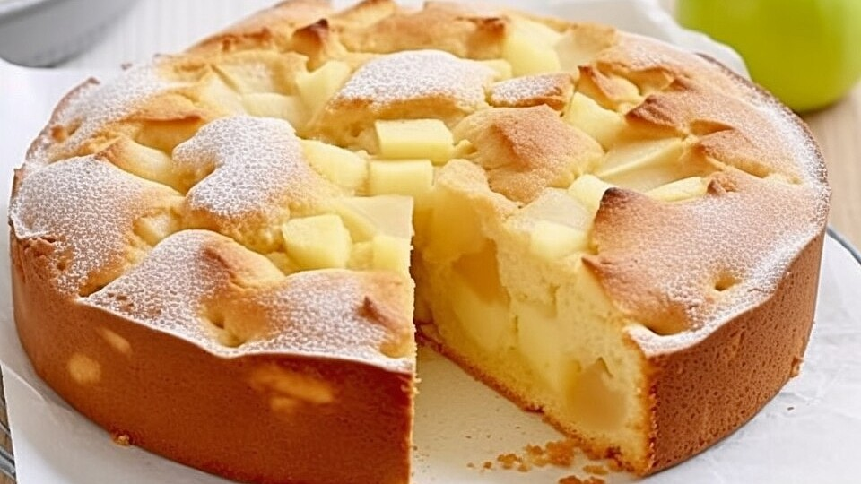
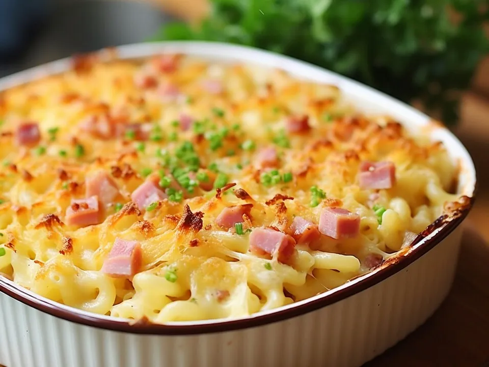
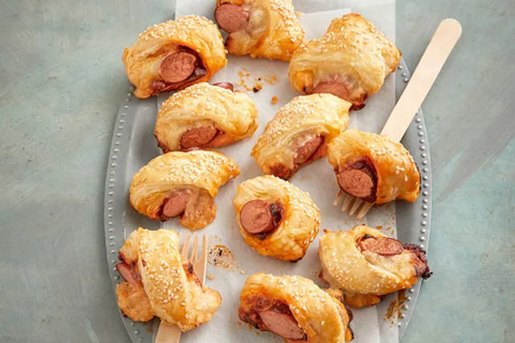
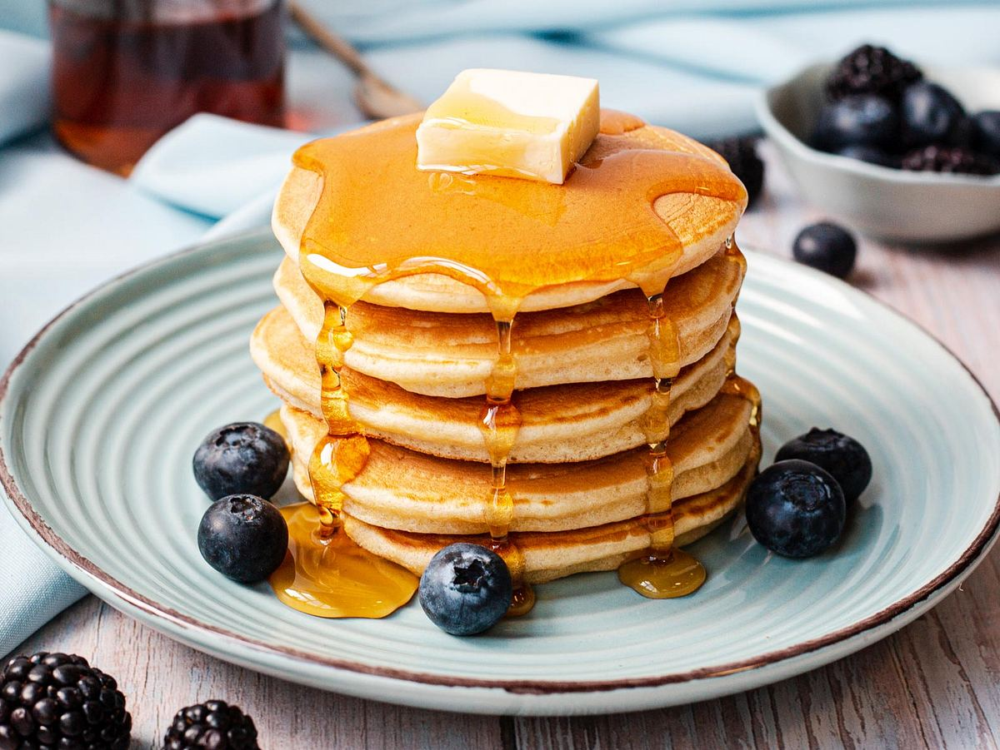
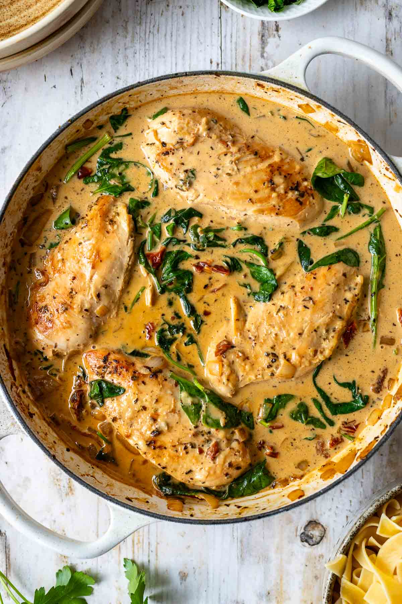
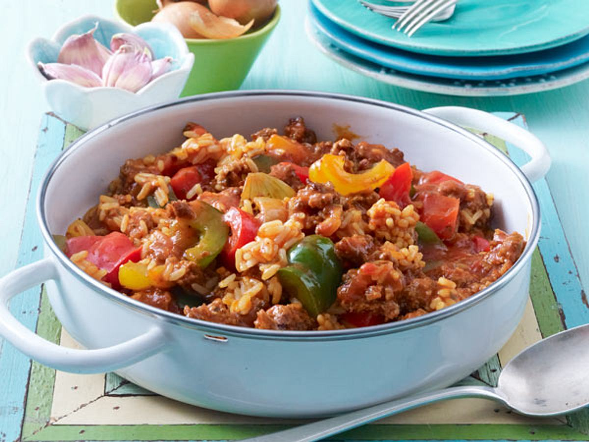
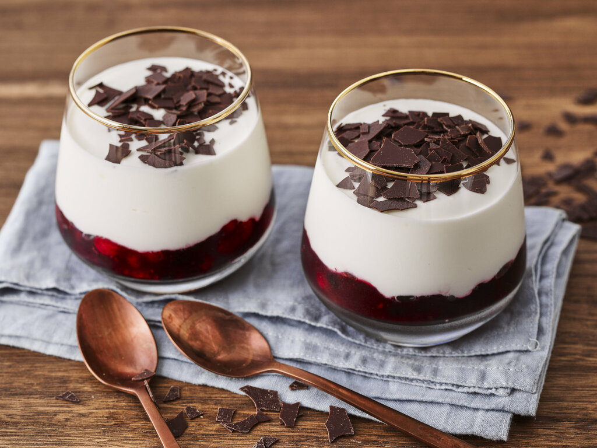
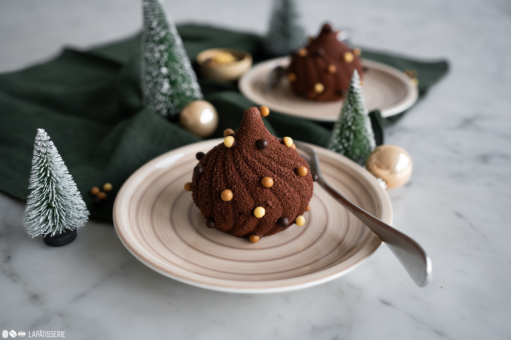

Top 3 Rezepte
Oma Erna's Apfelkuchen
- 125 g Margarine oder Butter
- 125 g Zucker
- 3 Eier
- ½ Pck. Backpulver
- 250 g Mehl
- 1 ½ kg entkernte Äpfel (geschält)
- Fett für die Form
- viel Butter zum Bestreichen
- viel Zucker oder Zimtzucker
Schinken-Käse Gratin
- 300 g Nudeln - z.B. Tortiglioni
- 1 Zwiebel
- 1 Knoblauchzehe
- 200 g Kochschinken
- 1 EL Butter
- 250 ml Sahne zum Kochen
- 2 EL Parmesan
- 1 TL Gemüsebrühpulver
- 2 Eigelb
- 150 g geriebener Käse
- Salz und Pfeffer
- Muskat
Würstchen im Schlafrock
- 2 EL Butter
- 3 EL Tomatenmark
- 1 EL italienische Kräuter
- 1 Prise Salz
- 2 Pck. Blätterteig (gekühlt)
- 1 Ei
- 8 Würste (aus dem Glas)
- 150 g geriebener Käse
- etwas Sesam zum Bestreuen
Rezeptsammlung
Schinken-Käse Gratin

Pancakes

Toskanisches Haehnchen-Pfanne

Paprika Hack Pfanne
Oma Erna's Apfelkuchen
Würstchen im Schlafrock

Schneewittchen
